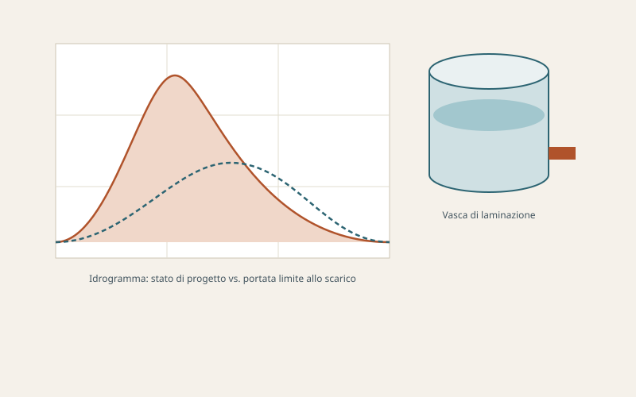

Invarianza idraulica e idrologica
Lo studio e l'asseverazione che dimostrano come una trasformazione del suolo non aumenti la portata di piena scaricata a valle.
Il principio
L'invarianza idraulica impone che la portata massima scaricata dall'area dopo l'intervento non superi quella preesistente; l'invarianza idrologica estende il vincolo anche al volume complessivo defluito. In pratica, l'impermeabilizzazione dovuta a edifici, piazzali e strade viene compensata con dispositivi che trattengono e rilasciano gradualmente le acque meteoriche.
Quando è obbligatoria in Lombardia
Il riferimento è il Regolamento Regionale 23 novembre 2017, n. 7 (e successive modifiche e integrazioni, tra cui il R.R. 8/2019), attuativo dell'art. 7 della L.R. 4/2016. Lo studio di invarianza è richiesto, in generale, per:
- nuove costruzioni e ampliamenti con incremento della superficie impermeabile;
- interventi di ristrutturazione urbanistica e nuova urbanizzazione;
- piani attuativi e permessi di costruire convenzionati;
- infrastrutture stradali e piazzali.
L'entità delle prescrizioni dipende dalla classe di intervento (in funzione della superficie interevento) e dall'ambito territoriale di appartenenza del Comune, classificato per criticità idraulica (A – alta, B – media, C – bassa).

Cosa comprende
Analisi idrologica
Definizione delle curve di possibilità pluviometrica per il Comune, scelta del tempo di ritorno e dei parametri di progetto.
Calcolo delle portate
Stima della portata generata dall'area nello stato di fatto e di progetto con metodo cinematico o dell'invaso, in funzione dei coefficienti di deflusso.
Volume di laminazione
Dimensionamento del volume di invaso necessario per rispettare la portata limite ammessa allo scarico (indicativamente 10–20 l/s per ettaro secondo l'ambito).
Dispositivi di invarianza
Progetto delle vasche volano, delle trincee drenanti, dei pozzi perdenti (dove ammessi) e dei sistemi di infiltrazione, con manufatto di regolazione della portata in uscita.
Verifica di infiltrazione
Prove di permeabilità in sito e verifica della soggiacenza della falda per stabilire se lo smaltimento nel sottosuolo è praticabile.
Relazione e asseverazione
Elaborato tecnico, tavole di progetto e asseverazione del professionista da allegare alla pratica edilizia e da trasmettere all'ente competente.
Gerarchia degli scarichi
Il Regolamento impone di privilegiare, nell'ordine:
- il riutilizzo delle acque meteoriche (irrigazione, usi non potabili);
- l'infiltrazione nel suolo e nel sottosuolo;
- lo scarico in corso d'acqua superficiale, con portata regolata;
- lo scarico in fognatura, come ultima opzione e previo accordo con il gestore.
Iter
- Verifica dell'obbligo e della classe di intervento in base al Comune e alla superficie.
- Sopralluogo, prove di permeabilità e raccolta dei dati di progetto.
- Calcoli idrologico-idraulici e dimensionamento dei dispositivi.
- Redazione della relazione, delle tavole e dell'asseverazione.
- Deposito con la pratica edilizia e invio all'ente competente / gestore del reticolo o della fognatura.
Nota. Valori di portata limite, tempi di ritorno e soglie di superficie sono fissati dal Regolamento Regionale vigente e possono essere ulteriormente specificati da regolamenti comunali o del gestore. Ogni studio viene tarato sul Comune e sull'ambito territoriale del sito.
Per gli interventi ricadenti in altre regioni si applicano i rispettivi regolamenti in materia di invarianza idraulica e idrologica, con criteri di calcolo e di dimensionamento analoghi.
Devi presentare uno studio di invarianza idraulica?
Indicami Comune, superficie del lotto e tipo di intervento: verifico l'obbligo e ti mando un preventivo.